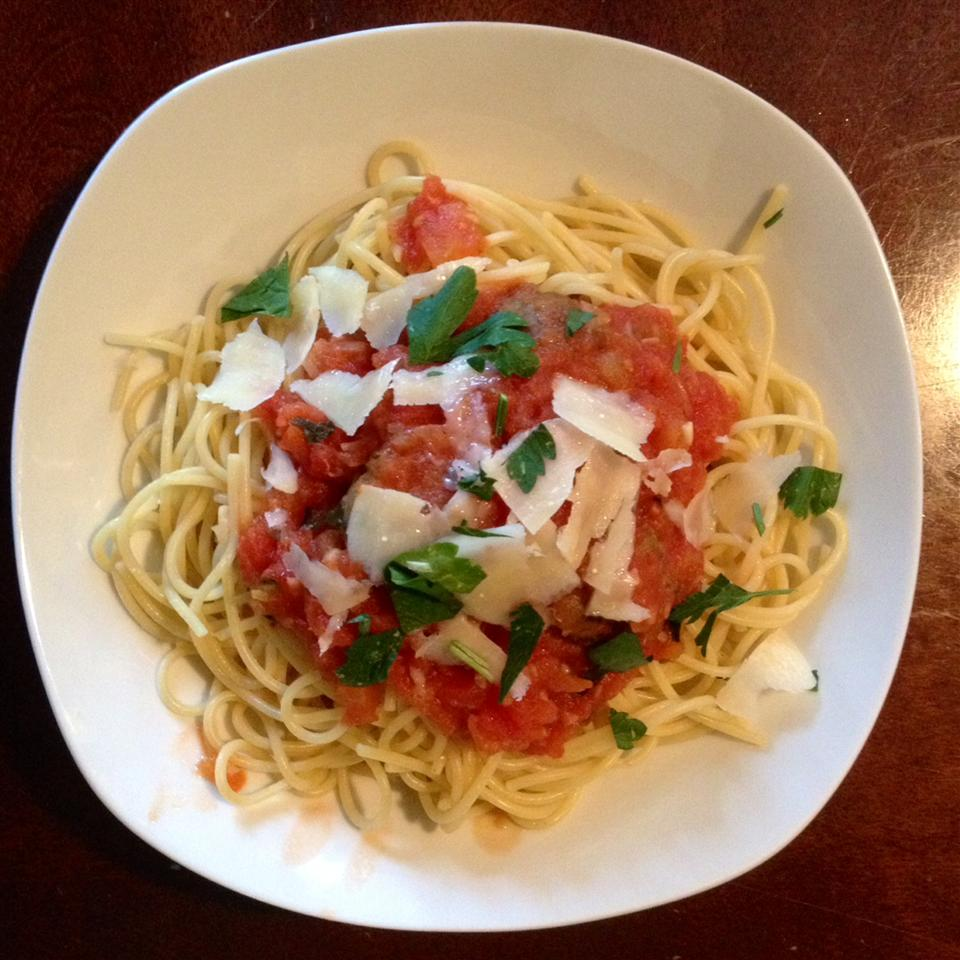

Italian Spaghetti Recipe

Ingredients
- 1/2 pound of italian sausage
- 4(6.5 ounce) cans tomato sauce
- 1(14.5 ounce) can diced tomatoes
- 2 bay leaves
- I teaspoon italian seasoning
- 1/2 teaspoon garlic powder
- 1 teaspoon dried basil
- I teaspoon dried oregano
- Salt and pepper to taste
- 1 (ounce) package spaghetti
Steps
- In a large skillet,brown sausage over medium heat; drain and set aside.
- In a large saucepan over mediu, heat, combine tomato sauce,fried tomatoes,bay leaves, italian seasoning, garlic powder, basil,oregano,Salt,
pepper and italian sausasge; mix well
- Simmer over medium-low heat for at least one hour; it is best if simmered all day
- Bring a large pot of lightly salted water to a boil.
Add pasta and cook for 8 to 10 minutes or untill al dente;drain
- Mix sauce with hot pasta;serve